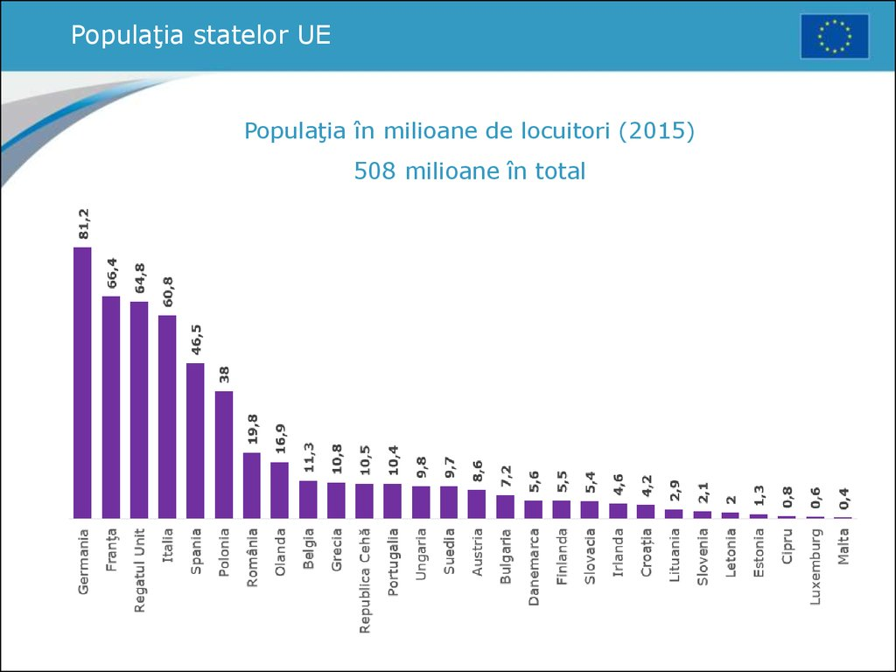

Uniunea Europeană (UE) este o uniune politică și economică a 27 de state membre situate în principal în Europa. Are o suprafață de 4.233.262 km2 și o populație estimată de aproximativ 447 milioane. UE a dezvoltat o piață unică internă printr-un sistem standardizat de legi care se aplică în toate statele membre. Politicile UE vizează asigurarea liberei circulații a persoanelor, bunurilor, serviciilor și capitalurilor în cadrul pieței interne, adoptarea legislației în domeniul justiției și afacerilor interne și menținerea unor politici comune privind comerțul, agricultura pescuitul și dezvoltarea regională. Pentru călătoriile în spațiul Schengen, controlul pașapoartelor a fost eliminat. O uniune monetară a fost înființată în 1999, a intrat în vigoare în 2002 și este compusă din 19 state membre ale UE care utilizează moneda euro. Cetățenia UE și cea europeană au fost înființate odată cu intrarea în vigoare a Tratatului de la Maastricht în 1993. Uniunea Europeană își are originea în Comunitatea Europeană a Cărbunelui și Oțelului și în Comunitatea Economică Europeană, înființate în 1951 prin Tratatul de la Paris, respectiv în 1957 prin Tratatul de la Roma. Membrii inițiali ai Comunității Europene au fost: Belgia, Franța, Italia, Luxemburg, Olanda și Germania de Vest. În anii următori Comunitatea s-a lărgit prin aderarea unor noi state membre și și-a crescut puterea prin adăugarea de domenii economice, sociale și politice în competența sa. Tratatul de la Maastricht a înființat Uniunea Europeană sub prezenta denumire în 1993. Cea mai recentă modificare majoră a bazei constituționale a UE, Tratatul de la Lisabona, a intrat în vigoare la 1 decembrie 2009. Regatul Unit a semnalat intenția de a părăsi Uniunea în urma unui referendum din iunie 2016. Astfel, pe 31 ianuarie 2020 Regatul Unit a părăsit definitiv Uniunea Europeană. Acoperind 7,3% din populația lumii UE a generat în 2017 un produs intern brut nominal (PIB) de 19.670 miliarde de dolari SUA, reprezentând aproximativ 24,6% din PIB nominal global și 16,5% măsurată în termeni de paritate a puterii de cumpărare. În plus, toate cele 27 de țări ale UE au indicele dezvoltării umane foarte ridicat conform Programul Națiunilor Unite pentru Dezvoltare. În 2012, UE a primit Premiul Nobel pentru Pace. Prin politica externă și de securitate comună, UE a dezvoltat un rol în relațiile externe și apărare. Uniunea întreține misiuni diplomatice permanente în întreaga lume și este reprezentată în cadrul Națiunile Unite, Organizația Mondială a Comerțului, G7 și G20. Datorită influenței sale globale, Uniunea Europeană a fost descrisă ca o superputere emergentă.

După Al Doilea Război Mondial, integrarea europeană a fost văzută ca un antidot al naționalismului extremist care a devastat continentul. Într-un discurs ținut la 19 septembrie 1946 la Universitatea din Zürich, Elveția, Winston Churchill a mers mai departe și a promovat apariția Statelor Unite ale Europei. Congresul de la Haga din 1948 a reprezentat un moment esențial în istoria federală europeană, deoarece a dus la crearea Mișcării Europene și a Colegiului Europei, unde viitorii lideri ai Europei vor trăi și vor studia împreună. De asemenea, a condus direct la înființarea Consiliului Europei în 1949, primul mare efort de a aduce împreună națiunile Europei, inițial zece dintre ele. Consiliul s-a concentrat în primul rând pe valori - drepturile omului și democrația - mai degrabă decât pe probleme economice sau comerciale și a fost întotdeauna considerat un forum în care guvernele suverane ar putea alege să colaboreze fără autoritate supranațională. Aceasta a generat mari speranțe de integrare europeană și au existat dezbateri aprinse în cei doi ani care au urmat în privința modului în care acest lucru ar putea fi atins. Dar în 1952, dezamăgit de ceea ce au văzut ca lipsă de progres în cadrul Consiliului Europei, șase națiuni au decis să meargă mai departe și au creat Comunitatea Europeană a Cărbunelui și Oțelului, care a fost declarată a fi "un prim pas către o Europă federală". Oameni vizionari precum Alcide De Gasperi din Italia, Jean Monnet și Robert Schuman din Franța și Paul-Henri Spaak din Belgia au înțeles că oțelul și cărbunele erau cele două industrii esențiale pentru ducerea unui război și că prin legarea industriilor naționale, un viitor război între națiunile lor ar fi fost imposibil. Acești bărbați și alții sunt oficial creditați ca părinți fondatori ai Uniunii Europene. În 1957, Belgia, Franța, Italia, Luxemburg, Olanda și Germania de Vest au semnat Tratatul de la Roma, care a creat Comunitatea Economică Europeană și a stabilit o uniune vamală. De asemenea, au semnat un alt pact de creare a Comunității Europene a Energiei Atomice pentru cooperarea în dezvoltarea energiei nucleare. Ambele tratate au intrat în vigoare în 1958. În 1973, Comunitățile au fost extinse pentru a include Danemarca, Irlanda și Regatul Unit. Norvegia a negociat să se alăture în același timp, însă alegătorii norvegieni au respins aderarea prin referendum. În 1979, au avut loc primele alegeri directe în Parlamentul European. Grecia s-a alăturat în 1981, Portugalia și Spania au urmat în 1986. În 1985, Acordul Schengen a pregătit calea pentru crearea frontierelor deschise fără controale de pașapoarte între majoritatea statelor membre și unele state ne-membre. În 1986, steagul european a început să fie utilizat de CEE și a fost semnat Actul Unic European. În 1990, după căderea Blocului de Est, fosta Germanie de Est a devenit parte a Comunităților ca parte a unei Germanii reunite. Încercările de a rezolva problemele și de a face o UE mai eficientă și mai coerentă au avut un succes limitat. Odată cu extinderea planificată pentru a include fostele state comuniste din Europa Centrală și de Est, precum și Cipru și Malta, criteriile de la Copenhaga pentru aderarea la UE au fost convenite în iunie 1993. Extinderea UE a introdus un nou nivel de complexitate și dezacorduri. În 1995, Austria, Finlanda și Suedia au aderat la UE. În 2002, bancnotele și monedele euro au înlocuit monedele naționale în 12 state membre. De atunci, zona euro a crescut și cuprinde 19 țări. 2004, UE a înregistrat cea mai mare extindere când Cipru, Republica Cehă, Estonia, Ungaria, Letonia, Lituania, Malta, Polonia, Slovacia și Slovenia au aderat la Uniune.
La 1 ianuarie 2016, populația Uniunii Europene era de aproximativ 510,1 milioane de persoane (6,9% din populația lumii). În 2015, în UE-28 s-au născut 5,1 milioane de copii, ceea ce corespunde unei rate de natalitate de 10 la 1000, o rată sub media mondială. Pentru comparație, rata natalității în UE-28 a fost de 10,6 în anul 2000, de 12,8 în 1985 și de 16,3 în 1970. Rata de creștere a populației a fost pozitivă la o valoare estimată de 0,23% în 2016. În 2010, 47,3 milioane de persoane care au trăit în UE s-au născut în afara țării lor rezidente. Aceasta corespunde cu 9,4% din totalul populației UE. Dintre acestea, 31,4 milioane (6,3%) s-au născut în afara UE și 16,0 milioane (3,2%) s-au născut într-un alt stat membru al UE. Cel mai mare număr absolut de persoane născute în afara UE au fost în: Germania (6,4 milioane), Franța (5,1 milioane), Spania (4,1 milioane), Italia (3,2 milioane) și Olanda (1,4 milioane).
| Loc | Numele orașului | Statul | Populația |
|---|---|---|---|
| 1 | Paris | Franța | 12.183.893 |
| 2 | Madrid | Spania | 6.549.520 |
| 3 | Barcelona | Spania | 5.514.881 |
| 4 | Berlin | Germania | 5.259.363 |
| 5 | Ruhr | Germania | 5.113.487 |
| 6 | Roma | Italia | 4.355.725 |
| 7 | Milano | Italia | 4.336.121 |
| 8 | Atena | Grecia | 3.576.590 |
| 9 | Hamburg | Germania | 3.309.215 |
| 10 | Amsterdam | Țările de Jos | 3.242.852 |